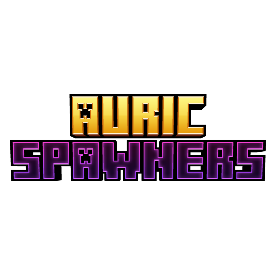

<!DOCTYPE html>
<html lang="en">
<head>
    <meta charset="UTF-8">
    <meta name="viewport" content="width=device-width, initial-scale=1.0">
    <title>AuricSpawners | Official Wiki</title>
    <link rel="icon" type="image/png" href="portada.png">
    
    <style>
        ::-webkit-scrollbar { width: 8px; }
        ::-webkit-scrollbar-track { background: #121212; }
        ::-webkit-scrollbar-thumb { background: #FFD700; border-radius: 10px; }
        ::-webkit-scrollbar-thumb:hover { background: #ffea00; }

        body {
            background-color: #121212;
            color: #e0e0e0;
            font-family: 'Segoe UI', Tahoma, Geneva, Verdana, sans-serif;
            margin: 0;
            overflow-x: hidden;
        }

        .sidebar {
            width: 250px; 
            background-color: #0a0a0a;
            padding: 20px 0;
            border-right: 2px solid #222;
            overflow-y: auto;
            position: fixed;
            top: 0; left: 0; bottom: 0;
            z-index: 100;
        }

        .logo-container {
            text-align: center;
            margin-bottom: 20px;
            padding: 15px;
            background: radial-gradient(circle, rgba(177, 0, 168, 0.3) 0%, rgba(10, 10, 10, 0) 75%);
        }

        .logo-container img {
            width: 220px; 
            height: auto;
            filter: drop-shadow(0px 0px 10px #b100a8);
            margin-bottom: 10px;
        }

        .sidebar h2 {
            color: #FFD700; 
            text-align: center;
            font-size: 1.2em;
            margin-top: 0px;
            text-transform: uppercase;
            letter-spacing: 1px;
        }

        .menu-btn {
            background: none; border: none; color: #b3b3b3; padding: 15px 25px;
            width: 100%; text-align: left; font-size: 1em; cursor: pointer;
            transition: 0.3s; display: block; border-left: 4px solid transparent;
            font-weight: 500;
        }
        
        .menu-btn:hover, .menu-btn.activo { 
            background-color: rgba(255, 215, 0, 0.05); 
            border-left: 4px solid #FFD700; 
            color: #ffffff;
        }

        .contenido-principal {
            margin-left: 250px;
            min-height: 100vh;
            display: flex; 
            justify-content: center; 
            align-items: flex-start;
            padding: 50px 30px; 
            box-sizing: border-box; 
        }

        @keyframes aparecer {
            from { opacity: 0; transform: translateY(15px); }
            to { opacity: 1; transform: translateY(0); }
        }

        .seccion {
            display: none; 
            background-color: #1a1a1a;
            max-width: 850px;
            width: 100%; 
            padding: 40px 50px; 
            border-radius: 12px; 
            box-shadow: 0 10px 25px rgba(0, 0, 0, 0.5);
            border: 1px solid #2a2a2a;
            box-sizing: border-box; 
            animation: aparecer 0.4s ease-out;
        }

        h1 { color: #FFD700; font-size: 2.2em; margin-top: 0; border-bottom: 2px solid #333; padding-bottom: 10px;}
        h2 { color: #FFD700; margin-top: 30px; font-size: 1.5em; }
        h3 { color: #ffffff; margin-top: 30px; font-size: 1.2em; border-left: 3px solid #FFD700; padding-left: 10px;}
        p { line-height: 1.6; font-size: 1.05em; color: #cccccc;}
        ul { line-height: 1.8; color: #cccccc; font-size: 1.05em;}
        
        code { 
            background-color: #242424; 
            padding: 4px 8px; 
            border-radius: 6px; 
            color: #FFD700; 
            font-family: 'Courier New', Courier, monospace;
            border: 1px solid #333;
        }

        pre {
            background-color: #121212;
            padding: 15px;
            border-radius: 6px;
            border: 1px solid #333;
            overflow-x: auto;
            color: #FFD700;
            font-family: 'Courier New', Courier, monospace;
            margin-top: 10px;
            line-height: 1.5;
        }

        .feature-box {
            background-color: #222222;
            border-left: 3px solid #FFD700;
            padding: 15px;
            margin-bottom: 15px;
            border-radius: 0 8px 8px 0;
        }

        details {
            background-color: #1f1f1f;
            border-left: 3px solid #FFD700;
            padding: 10px 15px;
            border-radius: 4px;
            margin-top: 15px;
            margin-bottom: 20px;
        }

        summary {
            color: #FFD700;
            cursor: pointer;
            font-weight: 600;
            font-size: 1.05em;
            outline: none;
        }

        .botones-zona { display: flex; gap: 15px; flex-wrap: wrap; margin-top: 25px; }
        .boton { display: inline-block; padding: 12px 25px; font-weight: bold; text-decoration: none; border-radius: 8px; transition: transform 0.2s; font-size: 0.95em; }
        .boton:hover { transform: translateY(-3px); }
        .btn-discord { background-color: #5865F2; color: white; }
        .btn-modrinth { background-color: #1bd96a; color: #000; }
        .btn-youtube { background-color: #FF0000; color: white; }

        @media (max-width: 800px) {
            .sidebar { position: relative; width: 100%; height: auto; border-right: none; border-bottom: 2px solid #FFD700; }
            .contenido-principal { margin-left: 0; padding: 20px; }
            .seccion { padding: 25px; }
        }
    </style>
</head>
<body>

    <nav class="sidebar">
        <div class="logo-container">
            
            <h2>AuricSpawners Wiki</h2>
        </div>
        <button class="menu-btn activo" onclick="cambiarSeccion('inicio', this)">🌟 Overview</button>
        <button class="menu-btn" onclick="cambiarSeccion('features', this)">✨ Features</button>
        <button class="menu-btn" onclick="cambiarSeccion('comandos', this)">⚙️ Commands</button>
        <button class="menu-btn" onclick="cambiarSeccion('permisos', this)">👑 Permissions</button>
        <button class="menu-btn" onclick="cambiarSeccion('configuracion', this)">📄 Configuration</button>
    </nav>

    <main class="contenido-principal">
        
        <div id="inicio" class="seccion" style="display: block;">
            <h1>🌟 AuricSpawners</h1>
            <p><strong>The Ultimate Spawner Mining Experience</strong></p>
            <p>AuricSpawners allows you to mine spawners using different levels of Silk Touch or specific permissions. It is specially designed to support Trial Chamber spawners and offers deep customization for any server.</p>
            
            <div class="botones-zona">
                <a href="#" class="boton btn-modrinth" target="_blank">Download on Modrinth</a>
                <a href="https://discord.gg/GJRXZk8jEn" class="boton btn-discord" target="_blank">Discord Support</a>
                <a href="#" class="boton btn-youtube" target="_blank">YouTube Channel</a>
            </div>
        </div>

        <div id="features" class="seccion">
            <h1>✨ Key Features</h1>
            <div class="feature-box">
                <strong>Advanced Silk Touch:</strong> Require a minimum enchantment level to mine spawners successfully.
            </div>
            <div class="feature-box">
                <strong>1.21 Trial Spawner Support:</strong> Automatically detects mob waves and restores them upon placement.
            </div>
            <div class="feature-box">
                <strong>Dynamic Detection:</strong> Use <code>%mob%</code> to display the entity type on your dropped items.
            </div>
            <div class="feature-box">
                <strong>Modern Formatting:</strong> Full support for MiniMessage and HEX color gradients.
            </div>
        </div>

        <div id="comandos" class="seccion">
            <h1>⚙️ Commands</h1>
            <ul>
                <li><code>/auricspawners reload</code> - Reloads config and messages. <br><small>Permission: <code>auricspawners.admin</code></small></li>
            </ul>
        </div>

        <div id="permisos" class="seccion">
            <h1>👑 Permissions</h1>
            <ul>
                <li><code>auricspawners.mine</code> - Required to mine spawners (if enabled).</li>
                <li><code>auricspawners.place</code> - Required to place spawners (if enabled).</li>
                <li><code>auricspawners.admin</code> - Access to the reload command and update alerts.</li>
            </ul>
        </div>

        <div id="configuracion" class="seccion">
            <h1>📄 Configuration Guide</h1>
            <p>The <code>config.yml</code> file allows you to deeply customize how AuricSpawners works on your server. Below is a detailed explanation of each option available.</p>

            <h3>⛏️ Silk Touch Requirement</h3>
            <p>Enable or disable the requirement of having the Silk Touch enchantment on your tool to successfully mine and drop a spawner.</p>
            <details>
                <summary>Click to view code</summary>
<pre>
require-silk-touch: true
</pre>
            </details>

            <h3>✨ Minimum Silk Level</h3>
            <p>Set the exact level of Silk Touch required. This is an amazing feature if your server uses Custom Enchants plugins and you want to restrict spawner mining to higher enchantment levels.</p>
            <details>
                <summary>Click to view code</summary>
<pre>
minimum-silk-level: 1
</pre>
            </details>

            <h3>🔒 Mine Permission</h3>
            <p>If set to true, players will absolutely need the <code>auricspawners.mine</code> permission to break spawners. If they don't have it, they will receive an error message.</p>
            <details>
                <summary>Click to view code</summary>
<pre>
require-mine-permission: false
</pre>
            </details>

            <h3>🧱 Place Permission</h3>
            <p>If set to true, players will need the <code>auricspawners.place</code> permission to place a spawner back on the ground.</p>
            <details>
                <summary>Click to view code</summary>
<pre>
require-place-permission: false
</pre>
            </details>

            <h3>⚔️ Trial Spawners Support</h3>
            <p>Enable this to allow players to mine the new Minecraft 1.21 Trial Spawners. The plugin uses smart reflection to save the exact mob data and restore the Trial Spawner perfectly when placed.</p>
            <details>
                <summary>Click to view code</summary>
<pre>
support-trial-spawners: true
</pre>
            </details>

            <h3>📦 Regular Spawner Item</h3>
            <p>Customize the name and lore of the dropped regular spawner. You can use MiniMessage tags for colors and the <code>%mob%</code> placeholder to automatically display the entity type.</p>
            <details>
                <summary>Click to view code</summary>
<pre>
spawner-item:
  name: "<yellow>%mob%</yellow> <light_purple>Spawner</light_purple>"
  lore:
    - "<gray>%mob%</gray>"
</pre>
            </details>

            <h3>💎 Trial Spawner Item</h3>
            <p>Just like regular spawners, you can customize how the Trial Spawner item looks in the player's inventory when dropped.</p>
            <details>
                <summary>Click to view code</summary>
<pre>
trial-spawner-item:
  name: "<yellow>%mob%</yellow> <light_purple>Trial Spawner</light_purple>"
  lore:
    - "<gray>%mob%</gray>"
</pre>
            </details>

            <h3>💬 Messages & Prefix</h3>
            <p>Customize every single message sent by the plugin. The prefix supports beautiful RGB Gradients using the MiniMessage format!</p>
            <details>
                <summary>Click to view code</summary>
<pre>
messages:
  prefix: "<b><gradient:#ff6700:#fdc300>Auric Spawners</gradient></b> <dark_gray>»</dark_gray> "
  no-silk-touch: "<red>You need Silk Touch to mine this spawner!</red>"
  low-silk-level: "<red>You need Silk Touch level <level> to mine this spawner!</red>"
  no-mine-permission: "<red>You don't have permission to mine spawners!</red>"
  no-place-permission: "<red>You don't have permission to place spawners!</red>"
  plugin-reload: "<green>Configuration reloaded successfully!</green>"
  no-permission: "<red>You do not have permission to execute this command.</red>"
</pre>
            </details>

        </div>

    </main>

    <script>
        function cambiarSeccion(idSeccion, boton) {
            var secciones = document.getElementsByClassName('seccion');
            for (var i = 0; i < secciones.length; i++) {
                secciones[i].style.display = 'none';
            }
            
            var botones = document.getElementsByClassName('menu-btn');
            for (var i = 0; i < botones.length; i++) {
                botones[i].classList.remove('activo');
            }
            
            document.getElementById(idSeccion).style.display = 'block';
            boton.classList.add('activo');
        }
    </script>
</body>
</html>